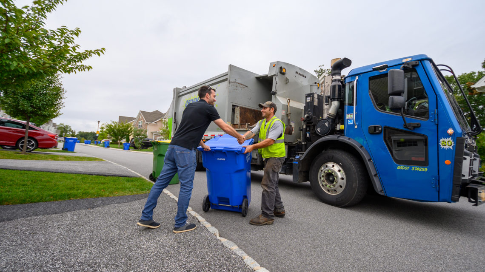
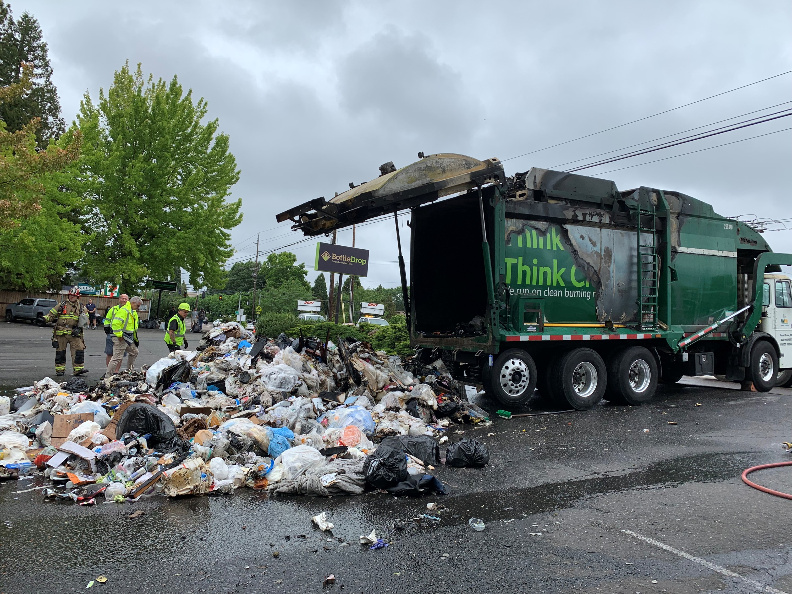
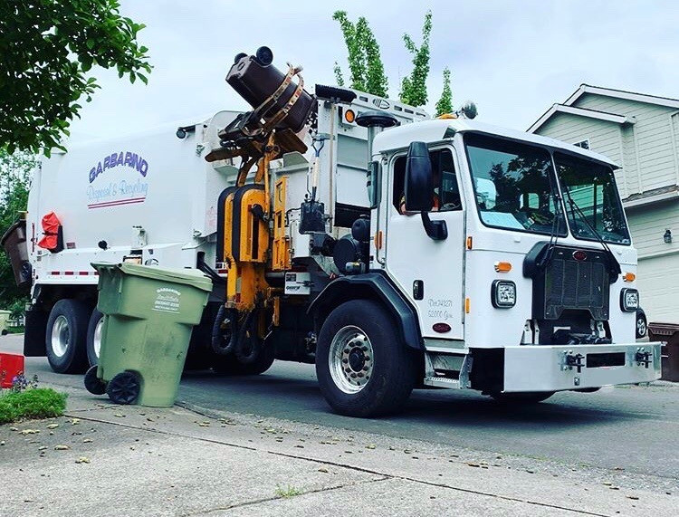

This ia a about Garbage we collect a garbage form allover the india our mession that we clean our india . We start our mession seen 19 october 2020 we complete 5 year and we collect 35% garbage from houses, river side, street, lane, drain. In this website where you can register your complaint and we provide service .Garbage is one of the most pressing issues faced by modern society, as the rapid pace of urbanizationand consumerism has increased the amount of waste produced every day. From households to industries, large volumes of garbage are generated that, if not managed properly, can create serious environmental and health problems. Improper disposal of garbage leads to the contamination of air, water, and soil, making our surroundings unhygienic and unsafe. Piles of uncollected waste attract insects, rodents, and stray animals, spreading diseases and creating foul smells that affect the quality of life in our communities. In addition, the burning of garbage releases harmful gases into the atmosphere, contributing to air pollution and climate change. Plastic waste is especially dangerous, as it does not decompose easily and pollutes land and water bodies for hundreds of years. To address these challenges, proper garbage collection and disposal systems are essential. Timely garbage pickup not only keeps neighborhoods clean but also encourages responsible waste management. Segregating garbage into biodegradable and non-biodegradable categories makes recycling and composting easier, reducing the burden on landfills. Awareness about reducing, reusing, and recycling waste is also necessary to minimize overall garbage generation. By adopting better waste management practices, we can conserve natural resources, protect public health, and ensure a cleaner and greener environment for future generations. A reliable garbage pickup service plays a key role in maintaining community hygiene and promoting sustainable living. It is not just about collecting waste, but about building a healthier and more responsible society. When citizens and service providers work together to handle garbage efficiently, we move one step closer to cleaner cities and a safer planet.



A reliable garbage pickup service plays a key role in maintaining community hygiene...